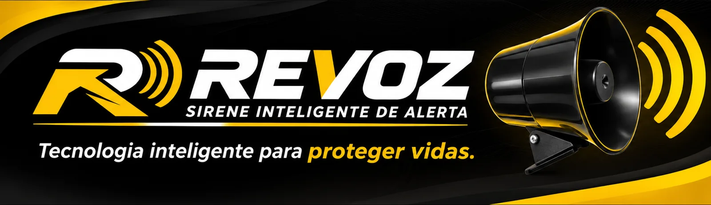
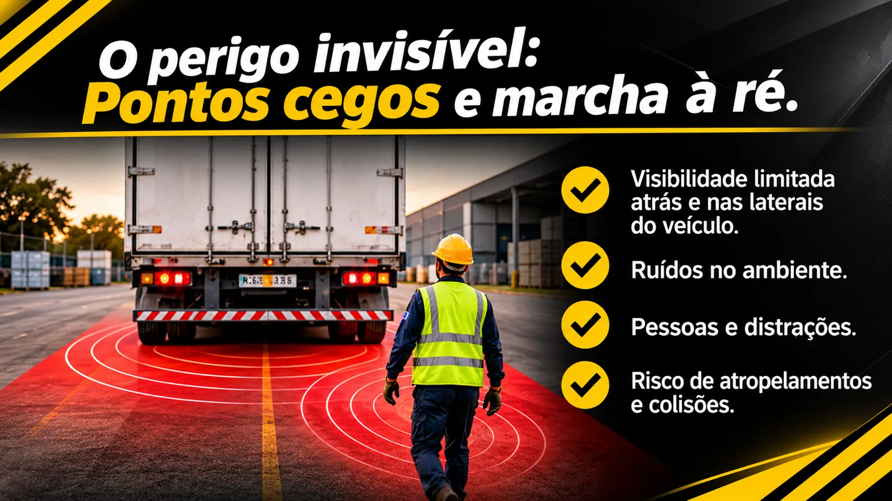
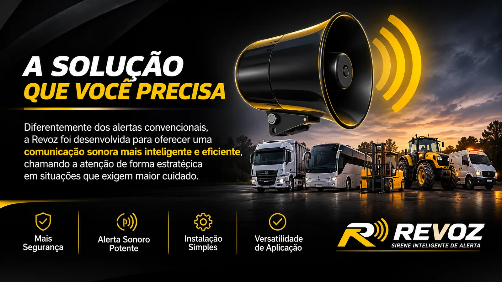
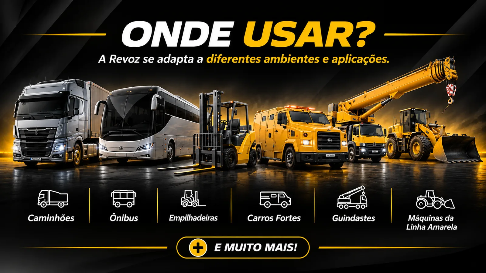
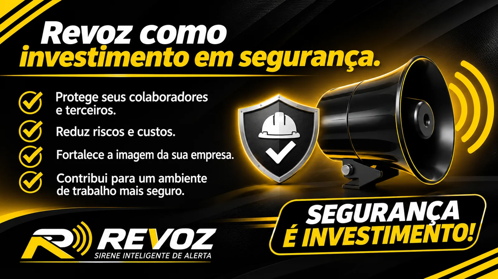

Alerta por voz que as pessoas realmente percebem.
A Revoz é a Sirene Inteligente de marcha ré que avisa quem circula perto de caminhões, empilhadeiras e máquinas. Há 2 anos levando mais atenção e prevenção para operações em todo o Brasil.
2 anos de mercado
+ de 10 tipos de veículos e equipamentos
atendimento em todo Brasil
Você já sabe como acontece.

A sirene comum virou barulho de fundo. Ninguém levanta a cabeça.
Pedestre e máquina no mesmo pátio, e um segundo de distração.
Um acidente para a operação e traz multa e indenização.
E o que mais pesa: uma vida em risco.
Não precisa ser assim.

A Revoz transforma o aviso em uma mensagem que se entende.
Você é ouvido
Mais do que uma sirene convencional, o alerta por voz aumenta a percepção de risco e a atenção de quem está por perto.
Uma solução, vários equipamentos
Do caminhão à empilhadeira, do trator ao guincho: você usa a mesma tecnologia em toda a sua frota.
Foco em proteger vidas
Menos exposição ao risco para seus colaboradores e menos interrupções por acidentes na operação.
Onde a Revoz protege a sua operação.
Indústrias, logística, campo, obras e transporte. Se tem manobra, tem risco, e a Revoz entra para avisar.

- Caminhões
- Empilhadeiras
- Tratores
- Guindastes
- Guinchos
- Carros-fortes
- Ônibus
- Linha amarela
- Veículos de entrega e coleta
- Equipamentos de obra
- Veículos em aeroportos
Dar o primeiro passo é simples.
Você chama a equipe
Um clique e você fala direto pelo WhatsApp. Sem formulário longo.
Contamos como a Revoz se encaixa
Você explica sua operação e seus equipamentos, e a equipe orienta a melhor aplicação.
Sua operação passa a ser ouvida
O alerta por voz chama a atenção de quem circula perto e reforça a cultura de segurança da sua empresa.
Quem usa, percebe a diferença.
“Em nossa experiência de utilização, a Revoz demonstrou ser uma alternativa relevante aos alertas sonoros convencionais, contribuindo para a percepção dos alertas durante a movimentação de veículos e manobras.”
- Comunicação sonora clara e fácil de compreender
- Melhor percepção dos alertas de movimentação
- Mensagens de advertência mais objetivas
- Mais valor para as medidas de prevenção da operação
Nosso propósito é mudar a cultura de segurança.
Há 2 anos, a Revoz leva alertas por voz a operações em todo o Brasil. Queremos ajudar empresas a proteger quem trabalha perto de máquinas e veículos, reduzir riscos e manter a operação funcionando.
Investir na Revoz é investir em atenção e prevenção no dia a dia, na proteção de vidas, na produtividade e em tecnologia aplicada à segurança operacional.

Dúvidas frequentes
A Revoz serve para o meu equipamento?
Ela foi pensada para caminhões, empilhadeiras, tratores, guinchos e máquinas industriais, entre outros. Conte qual é o seu equipamento e a equipe indica o melhor caminho.
Qual a diferença para uma sirene comum?
A sirene comum apita. A Revoz fala. O alerta por voz torna a mensagem mais clara e ajuda as pessoas a perceberem o risco com mais atenção.
Vocês atendem a minha região?
Sim, a Revoz atende o Brasil inteiro.
Como eu começo?
É só clicar em “Solicitar orçamento”. Você vai direto para o WhatsApp da equipe, e o resto a gente resolve por lá.
Pronto para fazer sua operação ser ouvida?
Conte rapidamente sobre sua operação. Sua mensagem abre direto no WhatsApp da equipe Revoz.
Prefere e-mail? contato.revoz@gmail.com